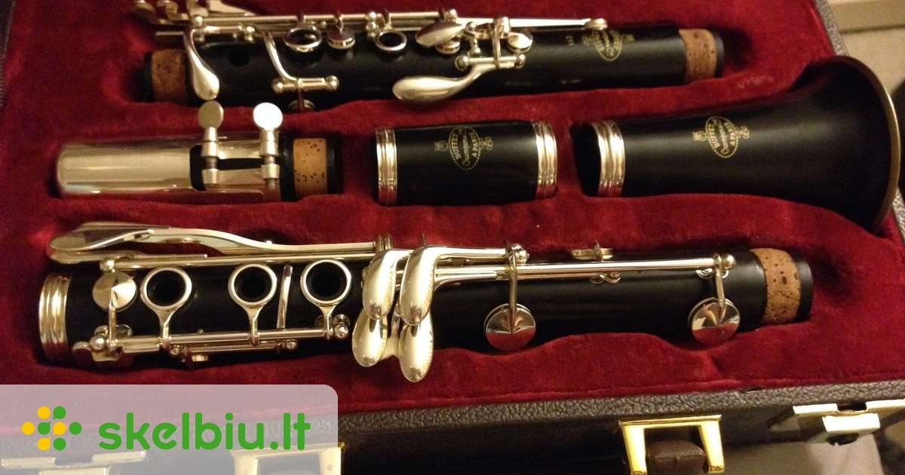

Tamsta - muzikos salonas | Tamsta - Muzikos prekių parduotuvė MUZIKOS INSTRUMENTAI Tai žaisliniai muzikos instrumentai, mikrofonai ir garsiakalbiai.Mes siūlome įvairių gitarų, smuikų, būgnų, akordeonų, sintezatorių ir kelių tipų mikrofonų pasirinkimą. Su šiais vaikiškais muzikos instrumentais jūsų vaikai galės pasijusti tikromis žvaigždėmis ir rengti pasirodymus namuose.
Muzikos instrumentai - milgreta.lt Muzikos instrumentai- el. parduotuvė ir muzikos prekės internete. Gitaros, klavišiniai instrumentai, perkusija, pučiamieji instrumentai ir daugelis kitų instrumentų. Užsukite - pas mus muzikos instrumentai - gera kaina !!!
Muzikos instrumentai : Objektai : Pagal kategoriją ir temą ... Klavišiniai instrumentai. Instrumentai. Pianinai . Fortepijonai . Sintezatoriai . Stacionarūs skaitmeniniai pianinai . Portatyvūs skaitmeniniai pianinai ... Be UAB "MUZIKOS FAKTORIUS" sutikimo draudžiama kopijuoti ir platinti svetainėje esančią informaciją. El. parduotuvių nuoma: verskis.lt.
Muzikos faktorius Muzikos instrumentai Atsarginės dalys Ausinės Garso kolonėlės Garso procesoriai Gitaros Grotuvai-rašikliai Instrumentų efektai Jungtys Kabeliai Kiti instrumentai Klasikiniai styginiai KLasikiniai styginiai instrume Klavišiniai Kompiuterija MIDI Mušamieji Pučiamieji Sempleriai Stovai, spintos, krepšiai Studijiniai monitoriai
Keisčiausi muzikos instrumentai | PrieKavos.lt Muzikos instrumentai ir muzikos prekės Tamsta internetinėje parduotuvėje. Gitaros, būgnai, klavišiniai, pučiamieji, styginiai, pro audio ir kita.
Gitaros | Muzikos instrumentai - muzikosgarsai.lt Muzikos instrumentai ir jų dalys. Pučiamieji muzikos instrumentai skirtomi į medinius ir varinius. Mediniams muzikos instrumentams priskiriami tokie instrumentai kaip išilginė fleita, skersinė fleita, klarnetas, obojus, saksofonas, fagotas ir t.t. Variniams muzikos instrumentams priskiriami trimitai, kornetai, fliugelhornai, trombonai, althornai, tenorhornai, eufonijos, tūbos.
Muzikos prekių parduotuvė - Midiaudio „Royalty free“ Muzikos instrumentai vaizdas: Smiling young man with eyes closed playing guitar while leaning on wall at Santa Cruz, Seville, Spai . dgof00886 [RF] Westend61 „Royalty free“ Muzikos instrumentai vaizdas: Smiling girl playing piano with brother in backyard .
Muzikos instrumentai, priedai internetu | pigu.lt Rubrikoje yra matomos įmonės, kurių veiklos sritis - įvairūs muzikos instrumentai, reikmenys, jų gamyba, pardavimas, importas, eksportas ar remonto darbai.
Muzikos instrumentai - ABC žaislai Lauko muzikos instrumentai. Lauko muzikos instrumentai darželiui, mokyklai. Instrumentai skirti groti auke. 1 - 32 iš 40 -18 % Lauko muzikos instrumentų komplektas Rainbow Trio Ensemble. Kodas: Rainbow ...
Muzikos instrumentai
2020.10.29 08:32

Šioje svetainėje naudojame slapukus, reikalingus sklandžiam svetainės veikimui ir rinkodarai. Privatumo politika Uždaryti Sutinku Prisijungti / Registruotis +370 615 44034 Prekės Pageidavimai (0) Mano paskyra Prekių krepšelis Atsiskaitymas Registruotis Prisijungti
Prekių krepšelis
0 prekė(s) - 0.00€ Jūsų prekių krepšelis tuščias Prekės Naujos prekės Kontaktai Pristatymas Naujienos Nuoma Muzikos instrumentai Muzikos instrumentai Klavišiniai, gitaros, mušamieji, ...
Klavišiniai
Skaitmeniniai pianinai Sceniniai pianinai Sintezatoriai su akomp. Sintezatoriai Midi ir kiti klavišiniai Kėdutės Dėklai Stovai ir laikikliai Priedai
Kita PRO garso sistemos Kolonėlės, stiprintuvai, pultai, ...
Kolonėlės
Be stiprintuvo Su stiprintuvu Žemų dažnių be stiprintuvo Žemų dažnių su stiprintuvu Garso sistemos Su akumuliatoriumi Studijinės Array serijos Stovai, laikikliai Dėklai Priedai
Stiprintuvai
2 kanalų 3 kanalų 4 kanalų Montuojami
Garso apdirbimo technika
Procesoriai Grotuvai Media grotuvai, kontroleriai Kompresoriai, krosoveriai Ekvalaizeriai Filtrai Di-Box
Mikrofonai
Vokaliniai Instrumentiniai Didelės diafragmos Mažos diafragmos Belaidžiai USB, media transliacijai Kamerai Lankeliai, prisegami Stovai, laikikliai, priedai
Mikšeriniai pultai
Kompaktiški DJ Skaitmeniniai Koncertiniai Su stiprintuvu Priedai
Garsiakalbiai
Pagrindiniai Aukštų dažnių Kiti Priedai
Kompiuteriui
USB sąsajos įrenginiai Keitikliai Programinė įranga Stovai
Stovai
Stovai
Akustinės medžiagos
Akustinės medžiagos Apšvietimo technika Šviesos efektai, dūmų mašinos, priedai
Sceninis apšvietimas
DMX galvos Skaneriai Prožektoriai LED Prožektoriai PAR Sekimo prožektoriai Teatriniai prožektoriai Priedai
Šviesos efektai, priedai
Šviesos efektai Šv. efektai su akumuliatoriumi Šviesos efektų rinkiniai Lazeriai Stroboskopai UV šviestuvai Gaubliai ir pašvietėjai DJ užtvaros Lempos Filtrai
Antgaliai laidams Plačios paskirties signalinės jungtys Duomenų perdavimo jungtys Kontaktinės kaladėlės Laboratorinės jungtys Maitinimo jungtys, lizdai TV ir kitos aukšto dažnio jungtys Audio, Video jungtys Automobilių įrangos jungtys Mikroschemų lizdai Kompiuterių ir telefonų tinklų jungtys
Komponentai
Jungikliai Relės, termokontaktai Ventiliatoriai, priedai Induktyviniai, kiti jutikliai Transformatoriai Saugikliai, saugiklinės Anglies šepetėliai Droseliai Vakuuminės lempos Lemputės Garsiakalbiai, mikrofonai Serviso įranga Multimetrai, lituokliai, įrankiai, ...
Matavimo, kontrolės prietaisai
Multimetrai Srovės replės Aplinkos matuokliai Instaliacinų tinklų tikrintuvai Rodykliniai indikatoriai Kiti Priedai
BEKO Daewoo Grunding JVC LG Panasonic Philips Samsung SHARP Sony Thomson TV STAR Vido Universalūs Kiti Energijos šaltiniai Elementai, akumuliatoriai, įkrovikliai, ...